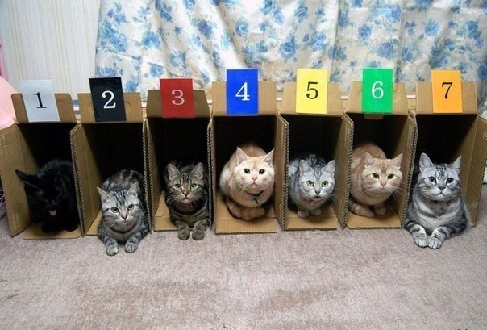

Foundations
Intro to JavaScript
Today we'll learn about...
- What JavaScript is and why we need it
- some basics of programming
- variables, expressions, and logical flow
- data types in JavaScript
...and we'll write our first JavaScript and see it at work in the browser
What can you do with JavaScript?
Access and modify content on the web page
- Select elements with a certain class
- Check a value that was entered into a form input
- Change styles or attributes of an html element
- Add new content to the page without reloading the page
More you can do with JavaScript!
Tell the browser to do something, and when to do it
- React to user input, like a mouse click or a tap on an element
- Show a slideshow
- Track how much time has passed while a user is on a page
- Wait until something happens (an event) before content is shown on the page
- Show or hide content on a page if a certain condition is met
JavaScript in the Wild
JavaScript runs in the browser
- You visit a website with JavaScript code included on the page.
- The browser reads the code line-by-line.
- The browser runs each line of code as it reads it.
- Based on these instructions, the browser may perform calculations or searches and does something on the page.
- If the browser finds code it doesn't understand, it stops running and throws an error.
JavaScript is loaded with the page
<script>
console.log('Hello World!');
</script>
Including JavaScript in your page
CODE BREAK
Inside the same project folder with your HTML and CSS files, create a JavaScript file and link it to your HTML page.
In the js file, write code to output ‘Hello World!”.
Try typing in the console and playing with what you can do there. Try some basic math operations!
Think Like a Programmer

Variables
Data Types in JavaScript
String concatenation
Combine strings with the + operator:
"This string can be combined " + "with this string."
var partOfAString = "Fun with "
partOfAString + "strings!"
Template literals
An even fancier way to combine strings:
var favoriteThing = "avocado"
`My favorite thing is ${ favoriteThing }`
CODE BREAK
Try out working with strings and variables in your JavaScript console!
In your JS file, see if you can write a Mad-Lib style sentence using variables and template literals to fill in the blanks. For instance, this could be one about Animal Fun Facts:
"________ have a reputation as ___________ animals. Research shows that they are _________. A pack of _________ can be as large as _________. They eat _________ and _________. They commonly live in ____________."
Conditionals
if/else statements let you add logical "flow" to your code.
Lines of code inside the brackets are run or not run based on a condition.
if (condition) {
// this code will be run
}
var pets = 5;
if (pets > 0) {
console.log ('You have some pets!');
}
Comparison Operators
-
Equality true if a is equal to b
a == b -
Identity (Strict Equality): true if a is equal to be and of the same data type
a === b -
Inequality: true if a is NOT equal to b, or they are not the same type
a != b
12 == 12 // true
"12" === 12 // false
12 != 12 // false
More Comparison Operators
-
Greater Than: true if a is greater than b
a > b -
Less Than: true if a is less than b
a < b -
Greater Than or Equal To: true if a is greater than or equal to b
a >= b -
Less Than or Equal To: true if a is less than or equal to b
a <= b
CODE BREAK
Make a variable called “temperature”. Write some code to tell you to put on a coat if it is below 55 degrees. Log your output to the console.
If/Else
Add more branches to your logic with else and else if
if (condition) {
// do this thing
} else {
// do this other thing
}
if (condition) {
// do this thing
} else if (differentCondition) {
// do this different thing
} else {
// do some other thing
}
Logical operators
-
And: both a and b
a && b -
Or: a or b
a || b -
Not: not a
!a
How to Use Logical Operators
These operators let you combine conditions.
var age = 19;
var usCitizenship = true;
if (age >= 18 && usCitizenship) {
console.log("You are eligible to vote!");
} else {
console.log("You can't vote yet!");
}
HOMEWORK 1
Modify your “wear a coat” code for these conditions:
- If it's less than 55 degrees, wear a coat.
- If it's less than 40 degrees, wear a coat and a hat.
- If it's less than 0 degrees, stay inside.
- Otherwise, wear whatever you want.
BONUS: Add code to wear a waterproof coat and/or boots if it is raining or snowing! How would you code this complexity?
But wait, there's more!
HOMEWORK 2
😸 JavaScript for Cats! 😸
Get as far as you can with this feline-infused introductory overview of JavaScript concepts.
Some of it will review what we've done today and some of it will be new material. We'll be doing more with JavaScript during the next few classes!